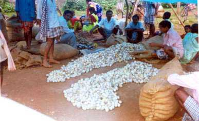
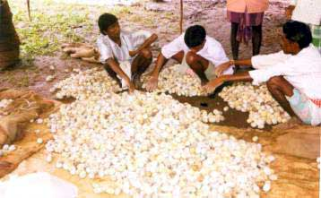

Cocoon Marketing System
Tropical tasar forms an important part
of tribal economy in India and tasar silk industry plays a dual
role in arresting the deforestation and generating gainful employment to the
tribal inhabitants. India has rich natural resources of food
plants for tasar silkworm and abundant manpower. However, tasar silk industry
has been facing a number of constraints resulting in uncertain growth
prospects. One such major factor is
lack of adequate marketing system in tasar sector.
Traditional marketing system
|

|
|
Traditional Cocoon Marketing
|
There are regular markets or haats in almost all tasar producing
states. By tradition, tribals rear tasar
silkworms using forest trees, produce cocoons and sell a weekly rural markets
on a designated market day, at whatever prices offered. Due to monopoly, the
producers are exploited by the commission agents. The traders/ mahajans have
links with buyers from other states and as such, the cocoons are also hoarded
for long periods. There is another class of small time traders located around
production areas who act as agents between big traders and local
weavers. Apart from operating in haat
areas directly these traders also buy cocoons from bigger traders cum
financiers, supply to local reelers or weavers and retain good margin for
themselves. The traders have no fixed practices or rules of pricing and
hence, go all out to check others from purchases.
Government intervention
The last three decades have witnessed tremendous improvement in the
market system for tasar sector, first with the initiative taken by the
Central Silk Board, Govt. of India in providing alternative market support
through establishment of Raw Material Bank (RMB) at Chaibasa (Jharkhand) with
its present two sub- depots at Raigarh (Chhattisgarh) and Bhagalpur (Bihar).
Subsequently the state governments introduced regulatory and intervention
measures to protect the interests of the tribal and to promote tasar silk
industry. States like Jharkhand, Bihar, Orissa, Andhra Pradesh and Maharashtra took direct market intervention
operations through establishment of their own agencies while other states
like West
Bengal
and Uttar Pradesh promoted regulated marketing environment without direct
participation. This over a period has resulted in a competitive atmosphere
and bestowed better bargaining opportunities on the producers. Each state has
its own policies and priorities on tasar marketing system.
Prevailing marketing system
Tasar cocoons are marketed by number. Various state governments follow
different units and tropical tasar cocoons are sold in local numerical lots.
Units adopted by tasar growing states are given below:
Units in vogue in tasar sector:
|
States
|
Unit
|
Number of cocoons
|
|
Jharkhand/Bihar
|
Kahan
|
1,280
|
|
Orissa
|
Kahan
|
1,600
|
|
Chhattisgarh/M.P.
|
Kahan
|
1,000
|
|
Maharashtra
|
Kahan
|
4,000
|
Local numerical lots also vary in some of the
states:
04 Cocoons = 1 Ganda
20 Gandas = 1 Pon
16 Pons =
1 Kahan (Jharkhand/Bihar)
20 Pons =
1 Kahan (Orissa)
Each state has its own arrangement of marketing system in tasar
sector.
Jharkhand/Bihar:
The
department of sericulture has set up three of  tasar cocoon marketing centers which purchase tasar
cocoons and dispose off the same to the reelers/ weavers and their societies.
These centers however, are not fully equipped to effectively play a marketer
role. Hence in the areas of Singhbhum and Santhal Pargana, the rearers bring
their cocoons in weekly haats where the traders, government institutions,
Khadi institutions purchase the cocoons from the rearers.
Orissa:
Orissa is
the only state where tasar cocoons are not permitted to be either sold or
purchased by any agency other than the Orissa State Tasar and Silk Co
-operative Society (OST&SCs) which is a commercial wing of the Department
of Textiles transacting under minor forest products act. State Co-operative
Society pay royalty to the forest department on the basis of the cocoon
purchased by primary co -operative society. Therefore, the state does not
appear to face any marketing problem.
Chhattisgarh/Madhya Pradesh: In Chhattisgarh/Madhya Pradesh the government procures cocoons through
a network of procurement centres under State Textile Co-operation and the
cocoons are used by the reeling/weaving units of the state department.
However, the excess quantity will be sold to the private parties outside the
state and the royalty is realized by the forest department from the
purchasers on the basis of quantity purchased. Trend of the market is
directly influenced by the trend of
tasar marketing in Chaibasa (Jharkhand). Besides, the tribal Federation
(TRIFED) also procures a sizeable quantity of nature grown Raily cocoons in
the state.
Maharashtra: The entire quantity of cocoons
produced in Maharashtra is procured by Development Corporation of Vidarbha
Limited (DCVL) at the rate decided by a committee constituted by the state
government.
West Bengal: Market support to the tasar cocoon
producers is being provided by the Department of Sericulture, West Bengal at its selected commercial centres.
Andhra Pradesh:
Department
of Sericulture has established some cocoon markets in different tasar growing
places. These markets are seasonal. Since the production is very limited no
permanent cocoon markets are established.
Uttar Pradesh:
U.P.
produces very small quantity of tasar cocoons in Sonebhadra and Chandauli
district. Most of the cocoons produced are consumed by NGO’s. Department of
sericulture can establish of mini cocoon market in U.P.
Others: Other state governments neither exercise monopoly nor restrict
transaction of cocoons, but allow market forces to operate. The government
only fixes minimum/ floor price for cocoons.
Purchasing units
The followings are the main purchasing
units of tasar cocoons in the states of Jharkhand, Orissa, Chhattisgarh,
Andhra Pradesh and West
Bengal.
1. Khadi organization 2. Raw Material Bank
3. Co-operatives 4. Private Mahajans
5. TRIFED 6. Export Manufacturers
7. Weavers
As these units other than private
Mahajans are purchasing the cocoons in very small quantities and there is no
coordination between these units and the relevant data regarding their annual
turnout is not known. However, the share of purchase by Mahajans is the
highest.
Usually the
cocoon purchasing starts in the month of October- November and continues up
to January-February. The cocoon consuming agencies purchase the green cocoons
from the market to meet their immediate requirement for a short period of 3-4
months. Subsequently, they purchase the stifled cocoons from Raw Material
Bank, Co-operatives and Private Mahajans.
Back
|